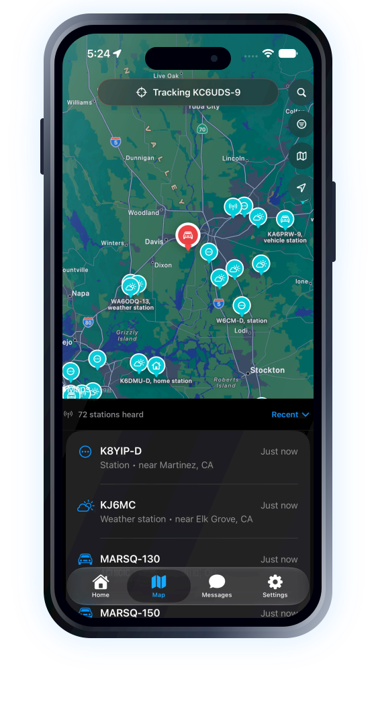
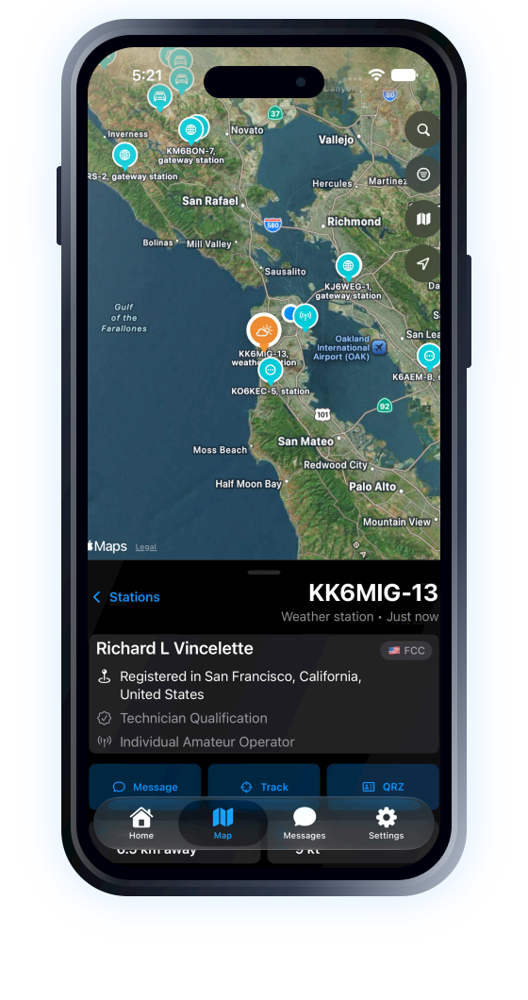
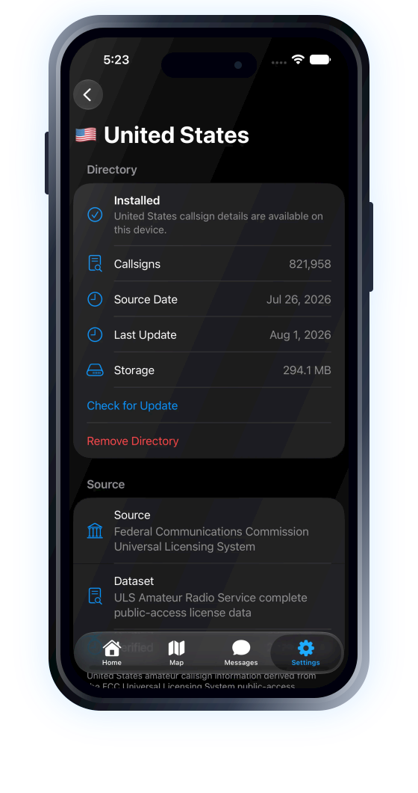

Nearby listening area
Use your current location or choose another area, with the listening radius kept visible and easy to change.
Live APRS maps & tracking
Explore live amateur radio activity, understand the stations around you, and follow movement as it unfolds in a focused, modern iPhone app.
Receive-only listening by default. Optional APRS messaging when configured.

Designed for discovery
Heard turns APRS packets into a clear view of the stations, movement, and local activity happening around you.
Start with a rich, interactive Apple map populated by station-aware symbols. Sort recent activity, browse a clear station list, and move naturally between the map and the details below.


Open a station to see what was heard, when it was heard, and the useful information carried in its APRS report. Optional offline directories can add operator and licence details without sending every lookup to a remote service.
Choose a moving station and keep it in view as new reports arrive. Heard can preserve your zoom, draw a breadcrumb trail, and reduce the visual weight of everything else.

Download the countries you need, then use local lookup to add context to stations and callsigns. Heard keeps each provider independent, clearly identifies the source, and lets you check for updates or remove a directory at any time.
The essentials, thoughtfully handled
Use your current location or choose another area, with the listening radius kept visible and easy to change.
Search stations already heard and, when a directory is installed, find records that have not appeared live yet.
A focused Messages tab is available when you choose to configure sending. Heard remains receive-only by default.
See the last station, last packet, packet count, station count, and connected duration at a glance.
Raw packet details and connection diagnostics remain available without overwhelming the primary experience.
Dark, tactile, and built with native Apple frameworks, accessibility support, and reduced-motion awareness.
Privacy in plain language
Location access is optional. Directory records are queried locally after download. Heard does not include advertising or third-party tracking SDKs.
Real screens from Heard
Every screen shown here is from the working app, not a fabricated marketing interface.
App Store release
Heard is preparing for its first public release on iPhone. This area is ready for the official App Store badge and final product link once the app is approved.
Contact: support@ghostwind.app